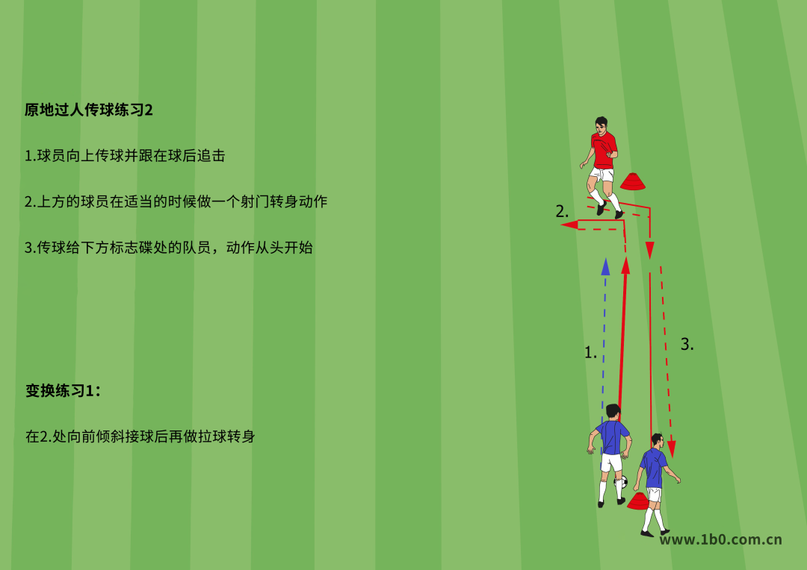
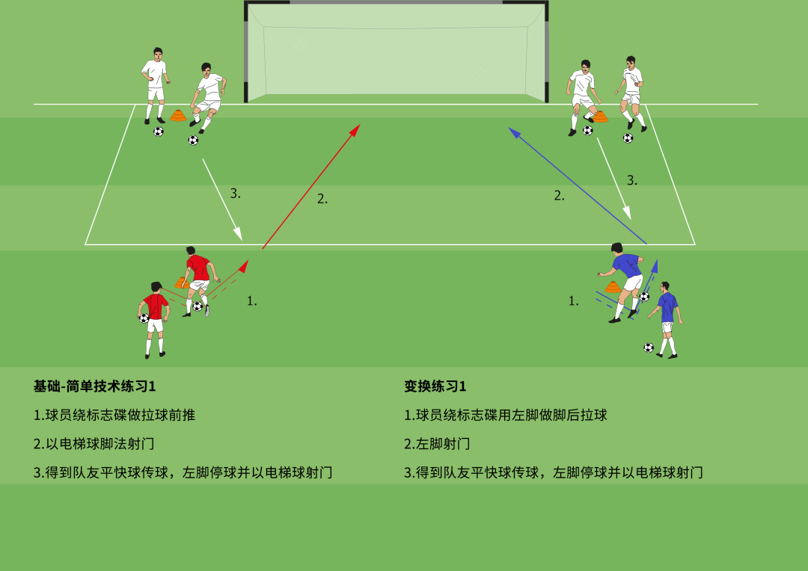
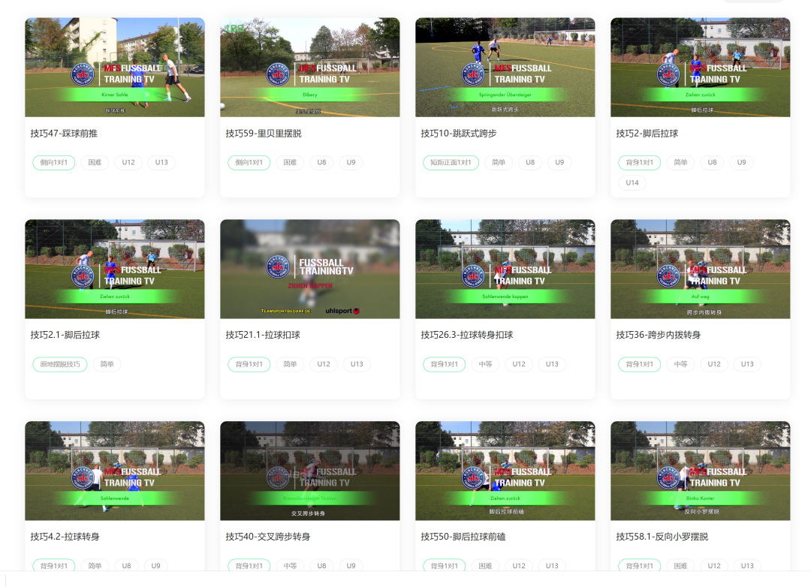

在慕尼黑足球学校（MFS）的青训理念中，技术训练占到了很大一部分。
以动作技巧为核心构建技术训练，是MFS培养孩子技术的核心理念。
举个例子，我们看下面这个训练单元

就是以“假传转身”和“拉球转身”为核心构建的传球训练，通过设置被动对手，帮助孩子更好把握技巧的使用距离
再比如

这个简单的技术练习中，原地摆脱技巧“拉球前推”与“脚后拉球”是这个训练的核心。
有了基本的了解之后，我们不禁发问，为什么MFS的理念中要以动作技巧为核心来构建孩子们的技术训练？
今天我们就再来扒一扒动作技巧的练习。
炫技的意义
动作技巧训练对于孩子们具有重要的意义。
首先，动作技巧可以激发孩子们的兴趣和主观能动性。
当孩子们在电视上看到自己喜欢的球星展示出华丽的动作技巧时，他们会觉得这些动作很帅，想要模仿。这种自主性的训练可以引导孩子们自主地练习各种动作技巧。
每节训练课都能学会1-2个动作技巧，比赛中立马就可以用出来，可以炫出来，不断掌握新的动作技巧，这可以充分激发孩子训练的积极性，把技术训练中的“无聊重复”变成孩子眼中的打怪升级。
在这方面，慕尼黑足球学校（MFS）已经准备了110多种不同的动作技巧，以满足不同年龄段和水平的孩子的需求。

其次，更重要的一点，动作技巧的训练可以相对全面地发展孩子们的身体各肌群的力量、身体协调性和动作速度。通过练习动作技巧，孩子们可以动员不同的肌群，全面提高身体素质。同时，由于动作技巧都是有球进行的，练习过程中还可以提升球感和技术水平。
阶段性目标
动作技巧可以帮助我们更好的制定阶段性目标。
比如，教练员可以选取一系列难度递增的动作技巧，将近半年的训练计划围绕这些技巧展开。每个阶段，孩子们掌握一个更难的动作技巧都可以作为一个阶段性的成果。这样的目标设置能够激励孩子们在训练中保持专注和积极性，不断突破自己的技术限制。
训练阶段性目标的设定还有助于建立孩子们的自信心。当他们成功地掌握一个难度较高的动作技巧时，会感到自豪并对自己的能力充满信心。这种信心将在比赛中得到展现，使他们能够更加从容地运用所学技巧，并在1对1对抗中取得更高的成功率。
我们也为大家准备了相应的训练计划
训练计划
总结
动作技巧的训练在慕尼黑足球学校起着核心作用，通过激发孩子们的兴趣和主动性，全面发展他们的身体素质和技术水平，并以阶段性目标为导向，为孩子们培养出色的足球球员。作为基层足球教练，我们应重视动作技巧的培养，同时注重训练阶段性目标的设定，为孩子们的足球梦想提供坚实的支持。
文字与图片版权归各自权利人所有；排版根据抓取内容整理。